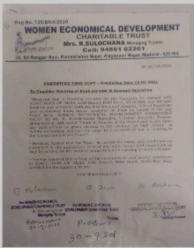

We Care About
Women Economical Development Charitable Trust Fondly Called as WEDC Trust Started its Services on the year of 2021 by some social works . Like helping young women , children, widows to enhance their life.Many young women in this city were well being and moving their life through this community.
This trust is running by a single person Mrs.R.Sulochana who is the managing trustee of the WEDC trust.She started this trust only with her will power. Through this trust,she helped some women by getting them pention and helping some children for their education.
During festivel days, She bought new clothes for 35 children and sarees for 20 old women . Last febuary, she planned to get some school bages for poor children but due to COVID-19 ,she could not execute her plan Instead ,she order new clothes for the childrens.
Actually she was a strong minded.she willingly participated herself in the social activities to help women and children by getting them government loan.She is in the side of government to help the young people.She help them through the government policies and she helped some people to get free houses through collector office by getting forms and filling for them.
She also helped a young girl who is rised by her single mother, she helped by getting a smart phone to attend her online classes.She also helped some young womens by providing them some part time jobs such as peeling the seeds from the dates fruit,etc.
The main motive of this trust is to help young childrens in their education.this trust aims to serve many women and children to move toward their life.The main mission of this trust to provide a better life for the needy.